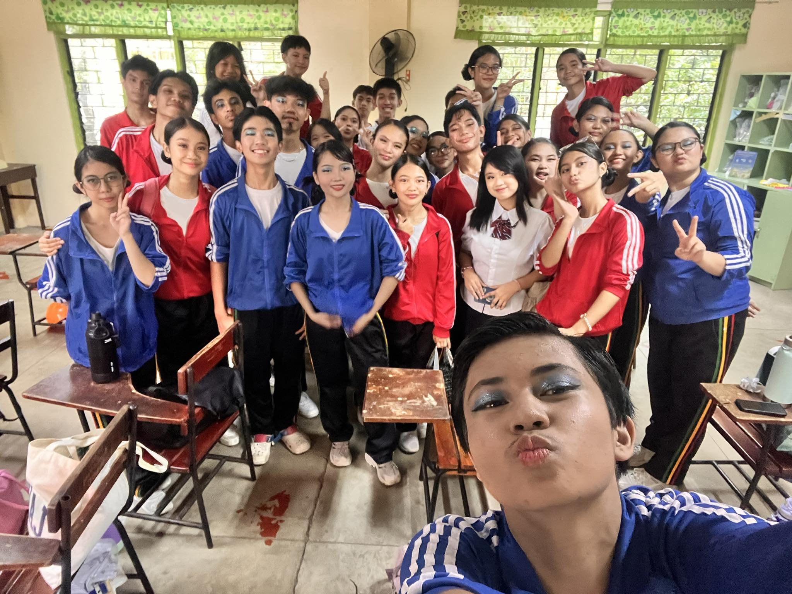
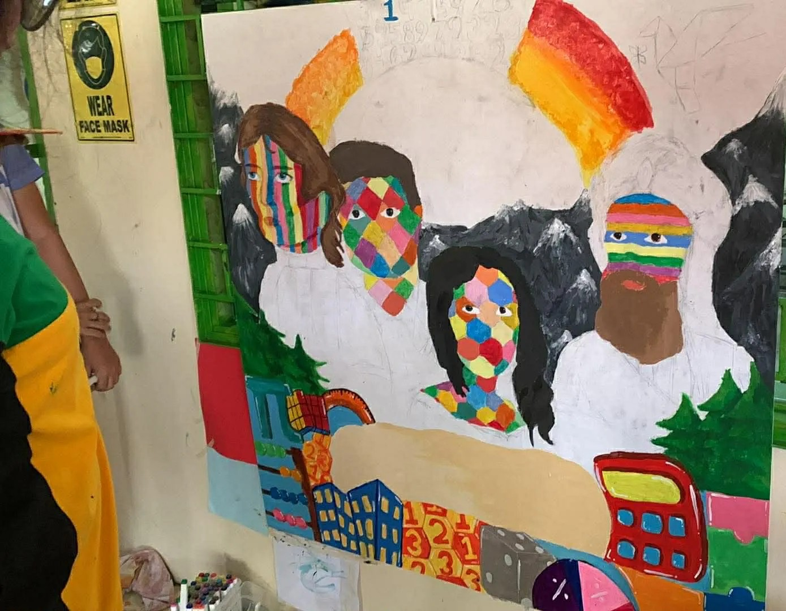
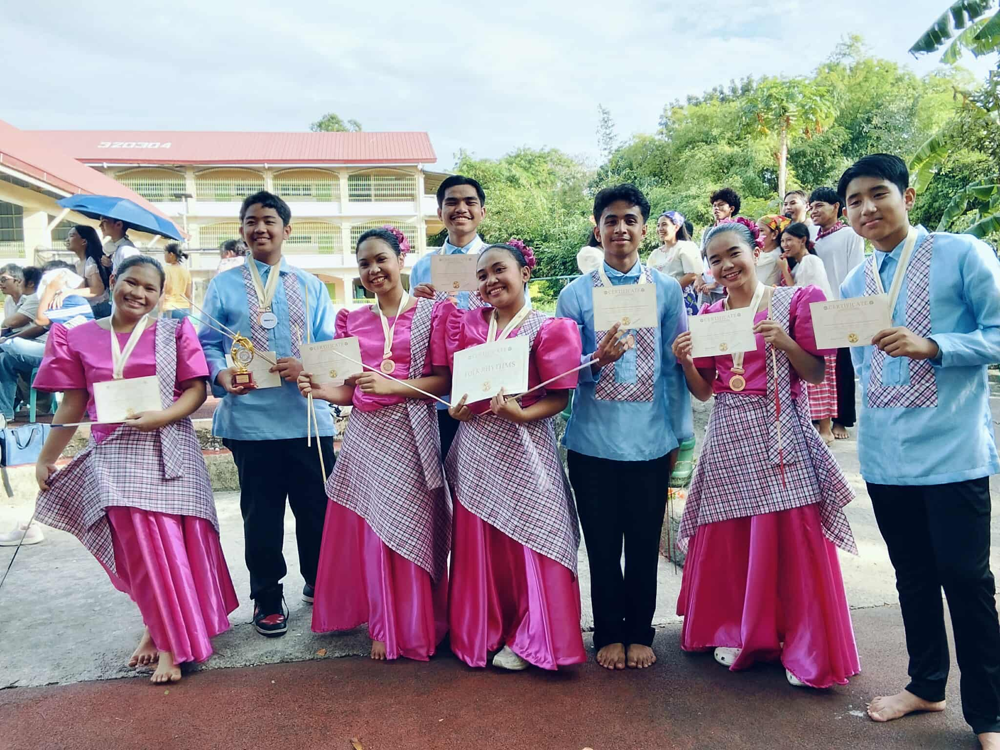
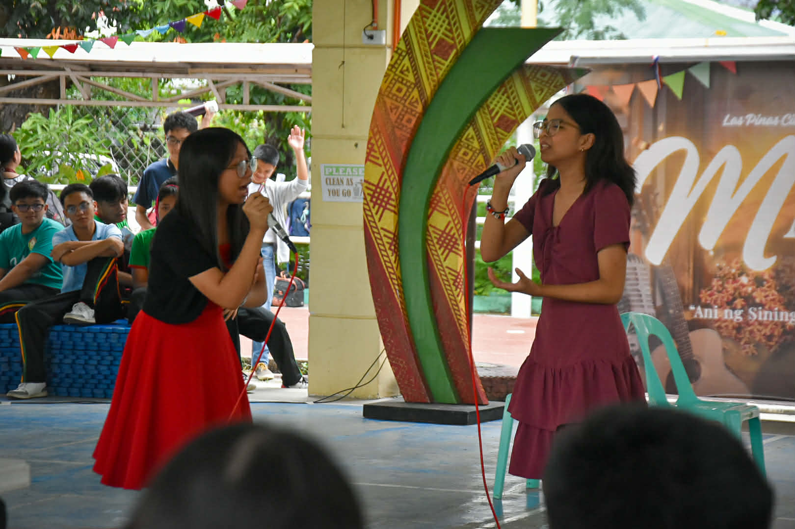

CREDITS: Jade Isabelle S. Imperial
This month can be explained as showcase of culture and the differing interests of people at LPSci. I participated in this month with the character costume event, and also by helping out during the book door cover contest, in which we won first place. The most important thing I learned here is to not be afraid of being myself. I can apply this new knowledge by being more open and sharing my interests and feelings with my friends and classmates. Overall, this month was important to show the impact that media has on our generation, good and bad.
CREDITS: Jade Isabelle S. Imperial
This event is regarded as one of the biggest events in LPSci, where each section prepares a pop song and dance according to the Values' Month theme. For every year since I entered this school, it has taught me lessons of cooperation, teamwork, and sportsmanship. I participated in this event and was a dancer alongside all of Fairness for our presentation. Throughout the event, one of the biggest things I've learned is to keep pushing. If you're tired, you just have to continue, and if you're unmotivated, it isn't an excuse to not do your best. I can apply my knowledge in the future because no matter how much work I have in my workplace, I need to always put 100% into what I do. For me, it is important to have this event to hype people up and get everyone excited before the year ends. It gives everyone a bit of rest from academics and bonds sections together. VPOP has always been a special event to me, and I will admit it will be sad when I have to perform for the last time next year.


CREDITS: Jade Isabelle S. Imperial, Riley Howard E. Dablo
This month gave us the first activities of 2026, getting us back into the rhythm of LPSci. If I was to explain this event, I would say that this month encourages you to see the influence math has on everything in our world. The most important thing I learned in this event was to be supportive and have patience with yourself. I participated in this event in the Math Mural Team, where I helped paint and also supported my other teammates. I also attended the Math Idol events and cheered for my section there. I can apply my knowledge from this event by taking the time to care for myself and look around to be happy for other people as well. I think it was important to have this event for others to show their talents and celebrate the magic of mathematics.


CREDITS: Jade Isabelle S. Imperial
The last subject month of the year, we ended with a lot of performances and dances. This time, I did not participate in the event, but rather I oversaw it as one of the officers of the Arts Club. The most important thing I learned from this event is to slow down and enjoy things while they last. If I was to explain this month to another student or classmate of mine, I would say that MAPEH month is made to show another side to academic achievers and people who seem fully engrossed in their studies. It shows that STEM students can still play and love music with their whole heart. I can apply what I learned by taking time for my hobbies, balancing my life effectively so that I wouldn't burn out. All-in-all, I think it's important to have this event to transition students from their academics, to the summer break.


CREDITS: Jade Isabelle S. Imperial
To explain this event simply, it is a platform for running student leaders to state their beliefs and what they can offer to the student body. I learned to be confident in my beliefs and not to settle until I find the right officers to lead our school. I actively participated in the event by listening closely to what each candidate had to say, and voting based on my opinions and judgement after. I can apply my knowledge by always thinking before I act, especially now that I will be able to vote in a few more years. This event is the most important because the whole of next year will be decided in these little moments, so we should pay close attention and exercise our right to choose our leaders.


CREDITS: Jade Isabelle S. Imperial, Ang Paham (John Martin Hulipas)
This activity was one of the most draining ones this school year, but it also means that I learned a lot of things from it. I actively participated as a member of the props team, making props from scratch to later being on stage moving said props around. I learned that it's impossible to have a successful play without the help of so many people and teams. I would explain this event as the last time that a section can perform together on a stage. All that I learned from this event can be applied in my real life as I consider theatre as my hobby, so I can use all the corrections and adjustments of our directions in any future productions I join.


CREDITS: Jade Isabelle S. Imperial, Vivienne Zuri A. Abenoja